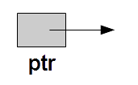
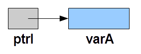
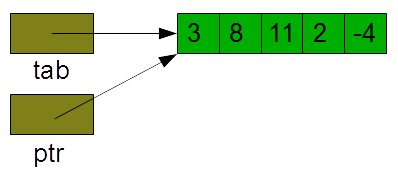
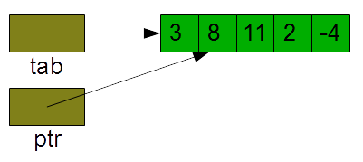

4. Pointeurs
La présentation du langage C nous a fait remarqué qu'un des intérêts du C est son efficacité. Une des raisons de ces bonnes performances tient à la gestion aisée de la mémoire, proche de ce que permet un langage d'assemblage. La manipulation des adresses mémoire se fait au moyen des pointeurs. Un pointeur est un type particulier, capable de conserver l'adresse d'un byte de la mémoire. Le pointeur est intimement lié au type de la donnée stockée à cette adresse, de manière à en respecter les contraintes.
Utilisation
La définition d'une variable de type pointeur nécessite de spécifier le type de la donnée qui sera accédée par le pointeur. Le symbole utilisé pour définir un type pointeur est le caractère *. Par exemple,
int *ptrI;
définit ptrI comme étant un pointeur sur un int, c'est-à-dire une variable qui contient l'adresse du premier byte d'une zone mémoire pouvant contenir un int. Tel que défini, le pointeur n'a pas été initialisé et il n'y a pas de réservation de place mémoire pour la valeur pointée.

La variable pointeur contient donc une valeur quelconque qui peut être l'adresse d'une zone mémoire interdite, l'adresse d'un zone déjà utilisée, etc. Un pointeur doit donc être initialisé avant d'être utilisé.
Pour être initialisé, un pointeur doit recevoir une adresse. Différentes possibilités s'offrent à nous :
-
L'adresse d'une variable déjà définie ; pour l'obtenir, il faut utiliser l'opérateur &.
ptrI reçoit l'adresse de la variable varA. ptrI = &varA; -
L'adresse contenue dans un autre pointeur (du même type)
int *autrePtr = ptrI;autrePtr reçoit l'adresse contenue dans le pointeur ptrI.
-
L'adresse d'un tableau
ptrI = tab;ptrI reçoit l'adresse du tableau tab, c-à-d l'adresse du premier élément du tableau. Cette affectation est donc équivalente à: ptrI = &tab[0].
-
L'adresse d'une zone mémoire dynamique (voir plus bas)
-
Ou encore l'adresse NULL spécifiant une adresse inaccessible. Cette valeur sera également utilisée comme valeur de retour pour indiquer qu'une fonction renvoyant un pointeur ne s'est pas terminée correctement.
Le contenu de la mémoire référencée par un pointeur est obtenu en appliquant l'opérateur * au pointeur (la déréférenciation), comme le montre l'exemple suivant :
printf("%d", *ptrI); // affiche la valeur entière pointée par ptrI
Pointeurs constants
Le qualificateur de type const doit être utilisé avec précaution avec les pointeurs. En effet,
const char *p1;
définit un pointeur sur un caractère constant, tandis que
char *const p2;
définit un pointeur constant sur un caractère.
Toute affectation avec pour membre gauche le caractère *p1 ou le pointeur p2 est par conséquent illégale.
La priorité des opérateurs
Nous avons abordé la priorité des principaux opérateurs lors de la présentation du langage. Nous pouvons ajouter à la liste les opérateurs liés à la manipulation des pointeurs:
| Niveau de priorité | Opérateur | description | Associativité |
|---|---|---|---|
| 17 | [] | indice de tableau | gauche |
| (...) | appel de fonction | ||
| . | sélection de membre | ||
| -> | sélection de membre par déréférencement | ||
| 16 | ++ | post-incrémentation | gauche |
| -- | post-décrémentation | ||
| 15 | ++ | pré-incrémentation | droite |
| -- | pré-décrémentation | ||
| 15 | sizeof | calcule la taille d'une variable(d'un type) | droite |
| ~ | complément à 1 (inversion des bits) | ||
| ! | non logique | ||
| + | identité (opérateur unaire) | ||
| - | changement de signe (complément à 2) | ||
| & | adresse | ||
| * | indirection, déréférenciation | ||
| 14 | (type) | cast, changement forcé de type | droite |
| 13 | * | multiplication | gauche |
| / | division | ||
| % | modulo (uniquement si opérandes entiers) | ||
| 12 | + | addition | gauche |
| - | soustraction |
Les conversions de pointeurs
Les compilateurs C remplacent automatiquement les tables par des pointeurs. Un tableau est considéré comme un pointeur constant sur le début du tableau, sa valeur (l'adresse des données en mémoire) est invariante. Les indices des éléments sont convertis grâce à l'arithmétique des pointeurs.
D'autres conversions sont permises, telles que les conversions explicites (par cast):
| type de destination (cast) | type d'origine |
|---|---|
| type entier | pointeur |
| T* ou void* | un type entier ou void* ou Q* |
Ou automatiques (lors d'affectations) sont appliquées :
| type à gauche | type permis à droite (sans cast) |
|---|---|
| void* | 0 ou T* ou void* |
| T* ou void* | 0 ou T* ou void* |
Mémoire dynamique
Vous avez vu dans le cours de langage d'assemblage qu'il existe plusieurs segments pour constituer un programme.

Le code segment contient toutes les lignes de codes ; le data segment contient les données initialisées ; le bss regroupe les variables globales non initialisées à la compilation (elles seront dans ce cas mise à zéro lors de l'exécution) ; la pile mémorise les informations utiles des sous-programmes et le heap correspond à la partie de la mémoire que le programme va utiliser pour alimenter les demandes de mémoire dynamique.
Dans un programme C, la mémoire dynamique est allouée en réponse à l'appel de la fonction malloc, ou d'une fonction dérivée calloc ou realloc.
La fonction malloc alloue le nombre de bytes demandé dans l'argument, cette mémoire est accédée grâce au pointeur retourné par la fonction. En cas de problème, la fonction renvoie un pointeur nul NULL. Il est donc impératif de toujours tester le code de retour de la fonction. Voici un exemple de création d'une zone mémoire pouvant contenir une valeur double :
double *ptrD;if ((ptrD = (double*)malloc(sizeof(double))) == NULL) {perror("Allocation dynamique de ptrD impossible");return 1;}
De même, la fonction malloc permet de créer des tableaux dynamiques, comme dans l'exemple suivant qui crée un tableau de 10 int :
int *tabDyn;if ((tabDyn = (int*)malloc(10*sizeof(int))) == NULL) {perror("Allocation dynamique de tabDyn impossible");return 1;}
La fonction calloc a la particularité d'allouer une zone mémoire initialisée à zéro, tandis que la fonction realloc permet de réallouer une zone mémoire en en modifiant la taille tout en conservant le contenu stocké dans la mémoire.
if ((tabDyn = (int*)realloc(tabDyn, 20*sizeof(int))) == NULL) {perror("Allocation dynamique de tabDyn impossible");return 1;}
Dans cet exemple, la table tabDyn est réallouée, éventuellement à un autre endroit de la mémoire, sa taille est doublée mais le contenu est conservé.
Pour une gestion saine de l'espace mémoire, il faut éviter de provoquer des fuites de mémoire (memory leaks), càd. des zones mémoires qui ne sont plus accessibles, donc perdues pour l'application. La conséquence d'une telle fuite peut être la saturation de la mémoire de la machine, ce qui provoque l'interruption du processus. Il est par conséquent recommandé de libérer toute mémoire dynamique devenue inutile dans l'application. Cette libération de mémoire se fait grâce à la fonction free.
free(tabDyn);
Une règle simple à appliquer pour éviter les fuites de mémoire est de faire systématiquement correspondre un appel à free pour chaque appel à malloc ou calloc.
Arithmétique des pointeurs
Le langage C permet de modifier la valeurs d'un pointeur en y appliquant des expressions mettant en jeu une arithmétique particulière, l'arithmétique des pointeurs. Dans cette technique, le compilateur prend en compte la taille de l'élément pointé lors de l'ajout (ou la suppression) d'une ou de plusieurs unités, comme dans l'exemple suivant:
int tab[5] = { 3, 8, 11, 2, -4};int *ptr = tab;
ptr++;

Où l'incrémentation du pointeur ptr permet d'ajouter à l'adresse qu'il contient un nombre de bytes égal à la taille d'un élément (i.e. sizeof(int)) et donc d'accéder à l'élément suivant de la table.
Notez bien que des expressions telles que ptr++ sont en général valides, quelle que soit l'information se trouvant réellement à l'emplacement correspondant. Comme toujours en C, il n'y a pas de vérification et la prudence reste de vigueur.
La soustraction de 2 pointeurs de même type donne le nombre d'éléments qui séparent les 2 adresses (et pas le nombre de bytes!).
indice = ptr - tab;
Il est possible d'incrémenter ou de décrémenter un pointeur de n'importe quelle quantité entière. Remarquez cependant que des opérations telles que l'addition de 2 pointeurs, bien que permises par le compilateur, fourniront probablement un résultat non significatif, càd. hors de l'espace d'adressage du programme. Les autres opérations sur les pointeurs sont sans objet.
Parcours d'une table par pointeurs
Il est plus efficace de parcourir une table en utilisant un pointeur, car de cette façon, on évite le calcul de l'indice à chaque itération. Par exemple, le code
int taille = 10, table[10];for (int i = 0; i < taille; i++)printf("%d\n", table[i]);
sera remplacé avec bonheur par la version utilisant un pointeur:
int taille = 10, table[10];for (int *q = table; q - table < taille; q++)printf("%d\n", *q);
Cette dernière implémentation est plus efficace que la première. En effet, dans la seconde boucle, l'accès à un élément du tableau ne nécessite que des incrémentations de pointeur (q++), alors que dans la première boucle, un tel accès implique des additions et des multiplications. En effet, table[i] est en réalité évalué comme suit: table + i*sizeof(int) (càd. l'adresse du tableau, plus i fois le nombre de bytes occupés par un int).